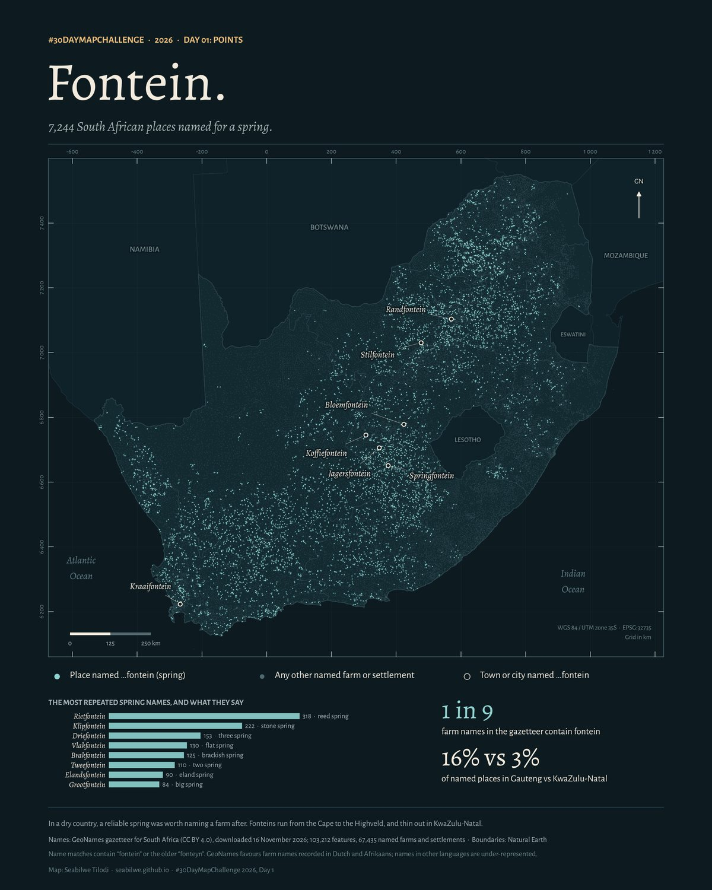

Day 1 · Points
Fontein
7,244 South African places are named for a spring. In a dry country, a reliable spring was worth naming a farm after.
- 1 in 9farm names in the gazetteer contain fontein
- 16% vs 3%of named places in Gauteng vs KwaZulu-Natal
How I made it
- Pulled every place in the GeoNames gazetteer for South Africa (103,212 features) and matched names containing fontein or the older fonteyn.
- Drew the 7,244 matches as points over a faint layer of all 67,435 named farms and settlements, so the pattern reads against where names exist at all.
- Counted the most repeated names: Rietfontein (reed spring) 318 times, Klipfontein (stone spring) 222, Driefontein (three springs) 153.
- Flagged the bias: the gazetteer leans on farm names recorded in Dutch and Afrikaans, so names in other languages are under-represented.
Data
GeoNames gazetteer for South Africa (CC BY 4.0) · Boundaries: Natural Earth.